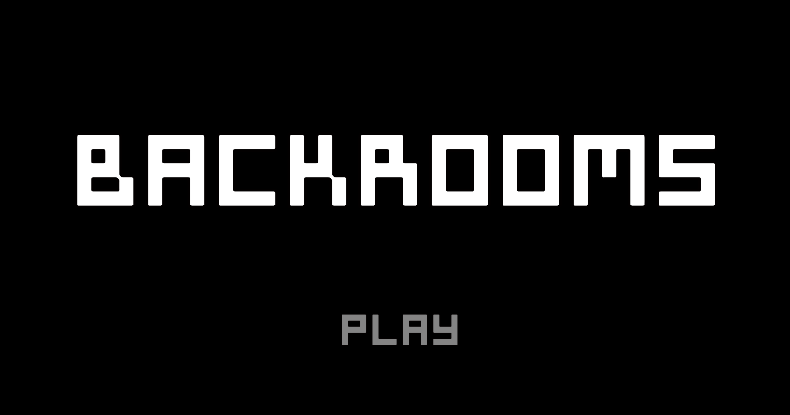
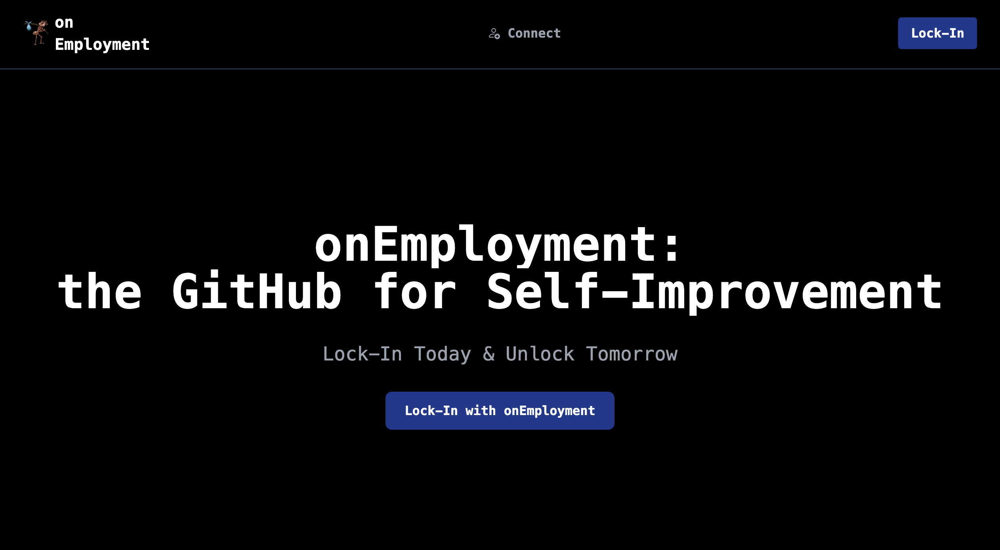
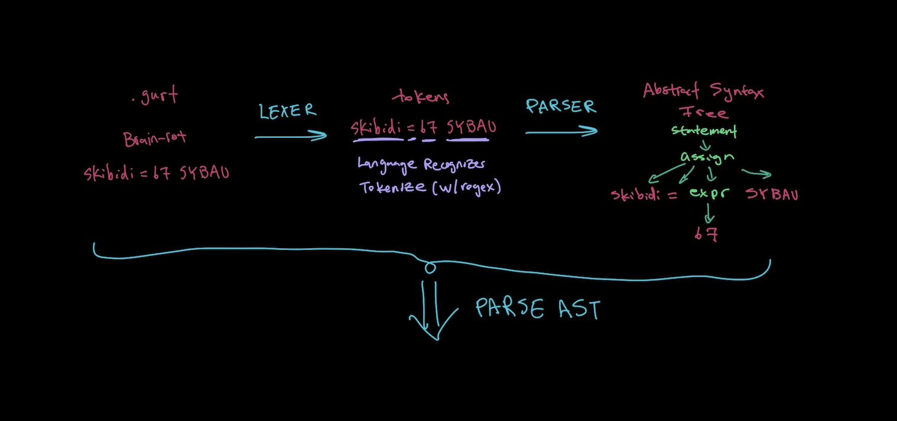

My Projects 📚

A first-person 3d escape room game. Built in Unity in collaboration with three other WashU students. Solve sequence-based puzzles to progress. (PWD: washu)

A full-stack MERN app aimed towards self-improvement via a GitHub-styled commit tracking for personal development projects.

A custom transpiler from an original brain-rot based language gurt to python.
This includes:
-
A Lexer to tokenize my gurt language
-
A Parser to transform the tokenized elements into an Abstract Syntax Tree (AST)
-
A Code Generator to turn the AST into python code (.gurt -> .py)